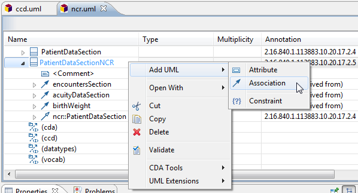
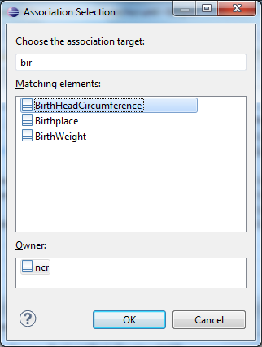
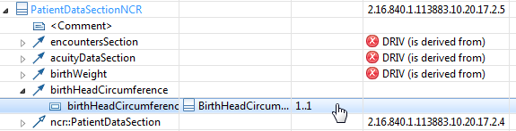

Create a new association constraint between two template classes.
-
Select the table row for the template class that is the
source/origin end of the association.
-
To add a new association, right-click on the table row and select

-
Select the association target class. Type the first few characters
of the class name to filter the list. Classes are shown for all open models,
which includes classes in other models such as CDA or CCD.

-
Assign the target end multiplicity, if different from the default
1..1
